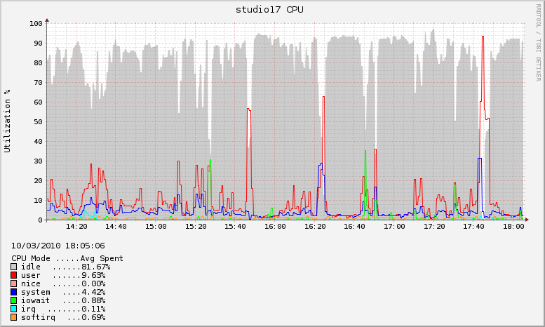

CPU Mode Stats - Local System
5-sec CPU sample taken every minute
Processor Modes:
- idle: idle task
- user: user mode
- nice: user mode with low priority
- system: system/kernel mode
- iowait: waiting for I/O to complete
- irq: servicing interrupts
- softirq: servicing softirqs
Last Hour (60 mins)

Last 4 Hours (240 mins)

Last 24 Hours (1440 mins)